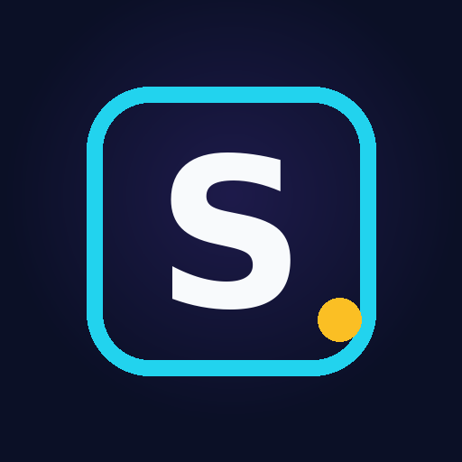

Sidelook Publisher is a private tool used by the owner of the Sidelook Pictures YouTube channel to publish short educational videos (science, history and natural phenomena, in Indonesian) to the owner's own channel.
The App uses the YouTube Data API and YouTube Analytics API to:
The App is not offered to the public and only accesses the channel of the account that authorizes it.
The App uses YouTube API Services. See the YouTube Terms of Service and the Google Privacy Policy.